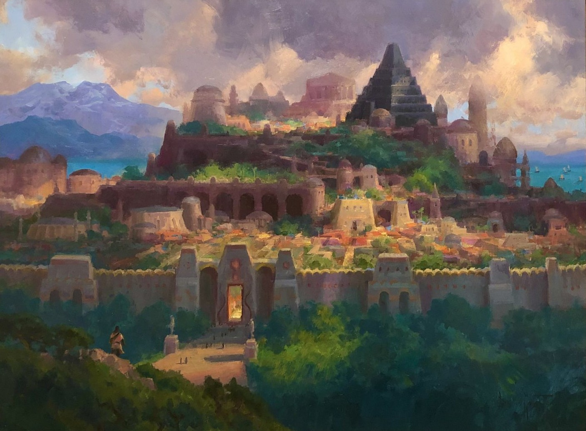
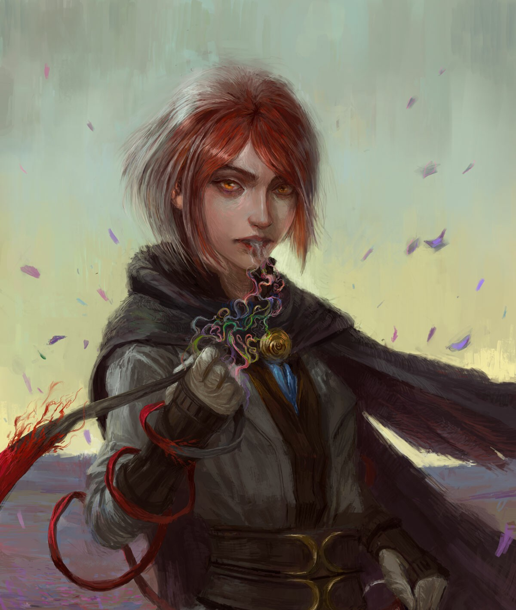

NALTHIS
A planet of vibrancy and color, with grand cities and empires, and magic with deep ties to its people.
The planet's cultures are diverse, with strong philosophical differences between nations. Hallandren is rich, extravagant, and ruled by a living god-king, while nearby Idris is austere and values humility and simplicity. This contrast shapes much of the planet’s political and religious tension.

NALTHIAN SYSTEM
The Nalthian system is a relatively small planetary system. It includes one gas giant, one outer planet, and a comet belt. The most notable planet is Nalthis, the only inhabited planet in the system. The gas giants comprise of Farkeeper the Bright, and Nightstar the Hidden.


INHABITANTS
The inhabitants of Nalthis are as varied and colorful as the world they live in. Hallandren’s society is marked by extravagance, vivid colors, and a deep reverence for the Returned, who are seen as gods come back to life.
By contrast, the people of Idris, a mountain kingdom, reject such excess and treat Breath as sacred, choosing a simpler and more austere lifestyle. Despite their differences, both societies are shaped by the magic and philosophy surrounding Breath, creating a dynamic tension between faith, identity, and power that defines the people of Nalthis.
BREATH
Breath is a unique and vital form of innate power, each person is born with one. It can be given away, collected, and even used to fuel powerful magical effects. Unlike most other forms of magic in the Cosmere, Breath is transferable between individuals, and its use is central to the magic system known as Awakening.
Those who possess many Breaths gain enhanced senses and abilities, progressing through distinct Heightenings that grant benefits such as perfect color recognition, improved life sense, and resistance to disease. Breath can also be used to animate objects, imbuing them with temporary life through specific verbal Commands.